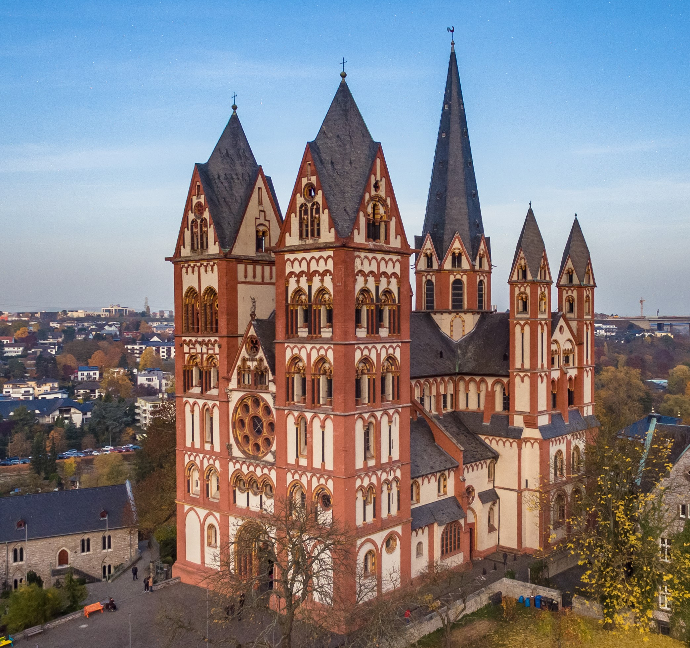

Der Limburger Dom
Der Limburger Dom, auch Georgsdom genannt, thront markant auf einem Felsen über der Lahn und prägt die Silhouette der Stadt Limburg. Mit seinen sieben Türmen gilt das imposante Bauwerk als eines der vollendetsten Beispiele des Übergangsstils von der Romanik zur Gotik. Im Inneren fasziniert die Kathedrale durch ihre farbenprächtige, detailgetreu restaurierte Ausmalung aus dem 13. Jahrhundert, die den Räumen eine ganz besondere Atmosphäre verleiht. Ein markantes äußeres Merkmal ist der leuchtend rot-weiße Verputz, der bei der aufwendigen Sanierung in den 1970er Jahren nach historischem Vorbild rekonstruiert wurde.